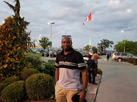

About Me
 I was born and raised in the Democratic Republic of Congo. My family is interested in technology. So from an earlier age, I was introduced to electronic devices.
In highschool, I specialized in Machine Outli, a field that introduces you to designing a tool such as a wrench and other tools.
My interest in Web development really started towards the end of my high school education. We used to see university students on our campus use computers and we weren't allow to even touch them.
I then went to Kenya where I joined the Electronic deparment. There, I was interested in web development since once of my friend used to inspect pages, then changed them and added his name in the Copyright. I thought that was so cool. Since then, I have been interested in technology, especially web development.
Check Out My Work
Connect with Me